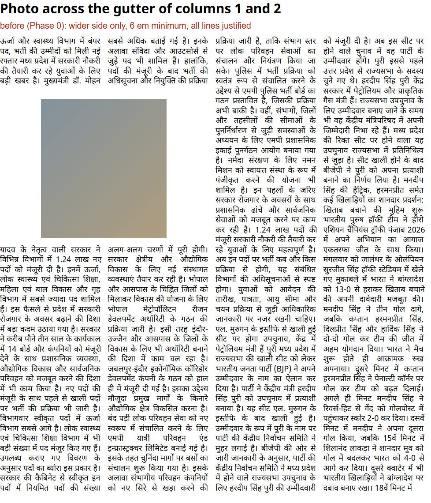
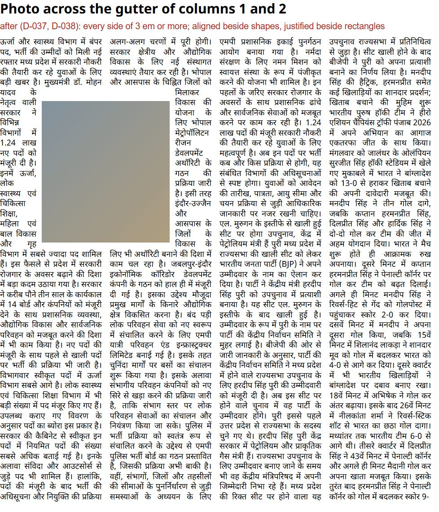
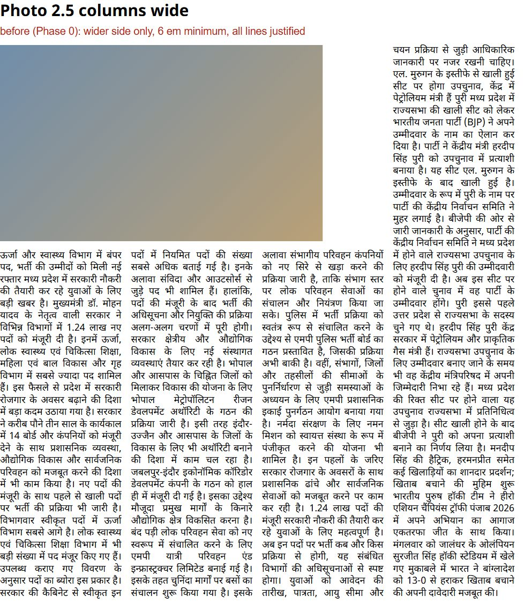
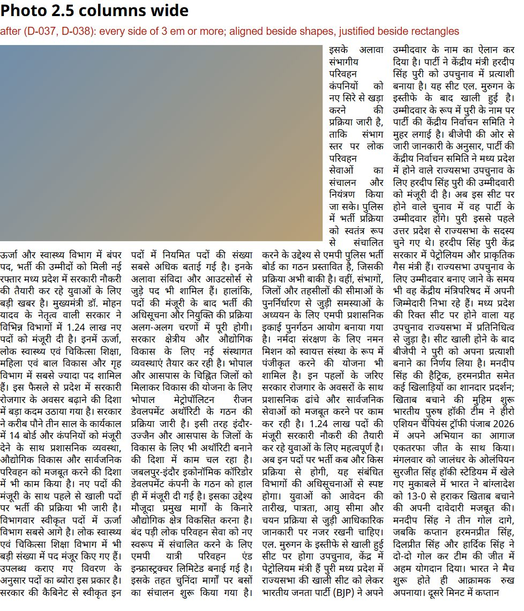
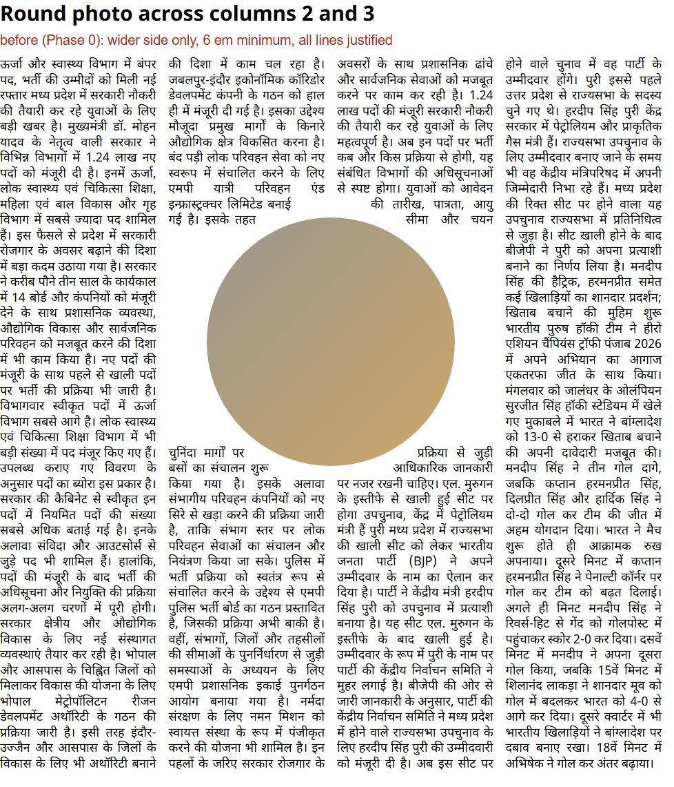
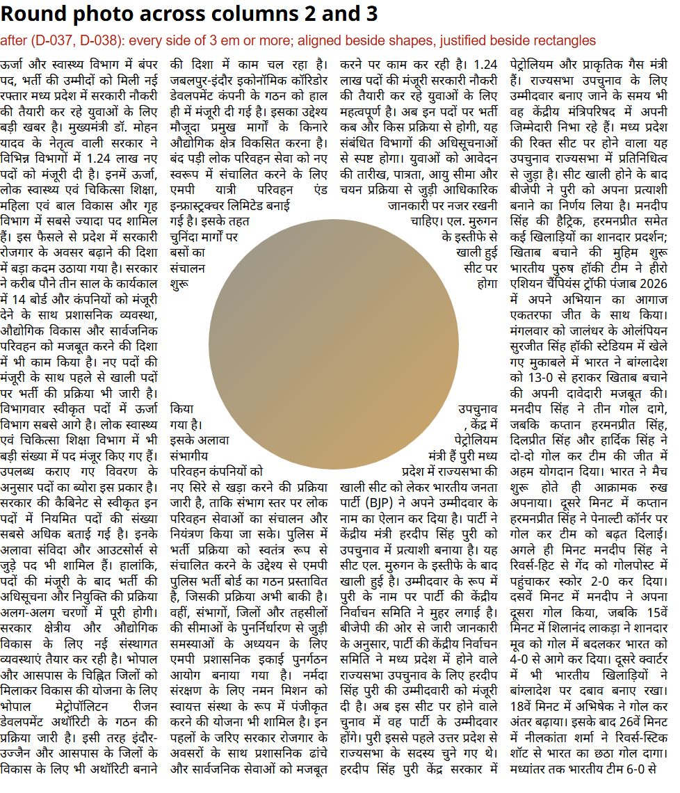
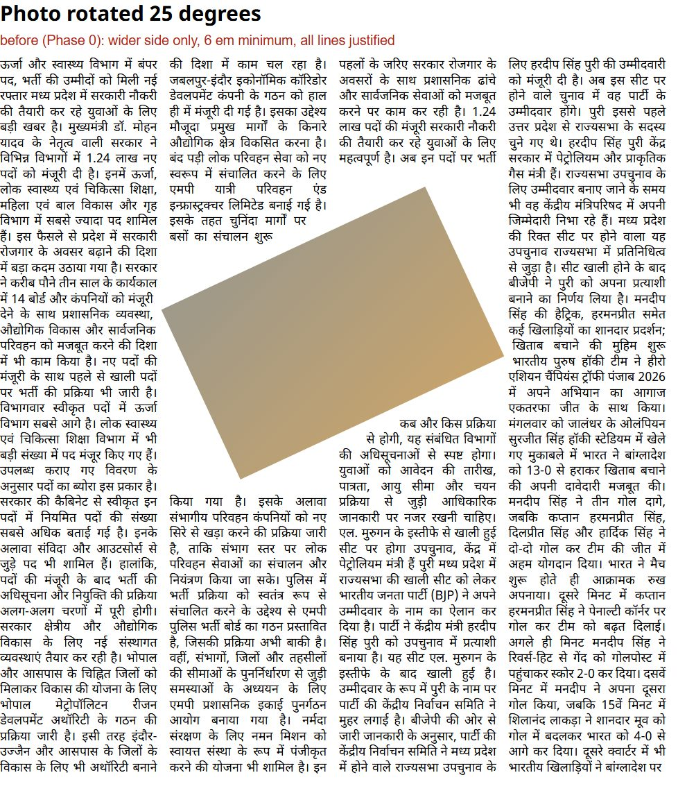
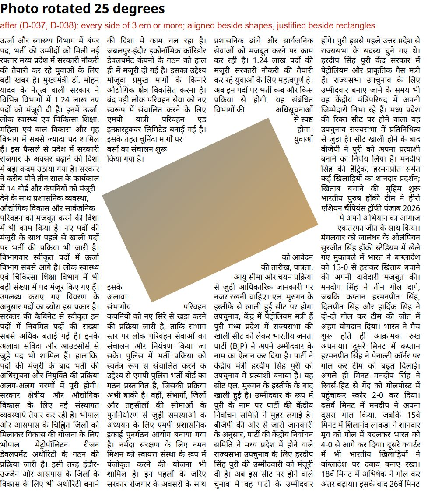
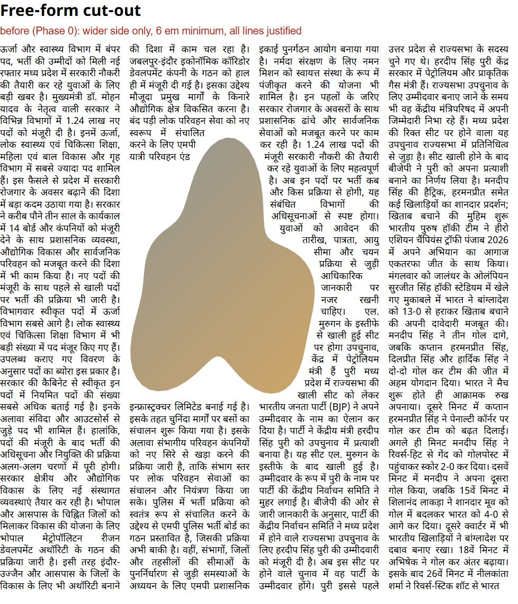
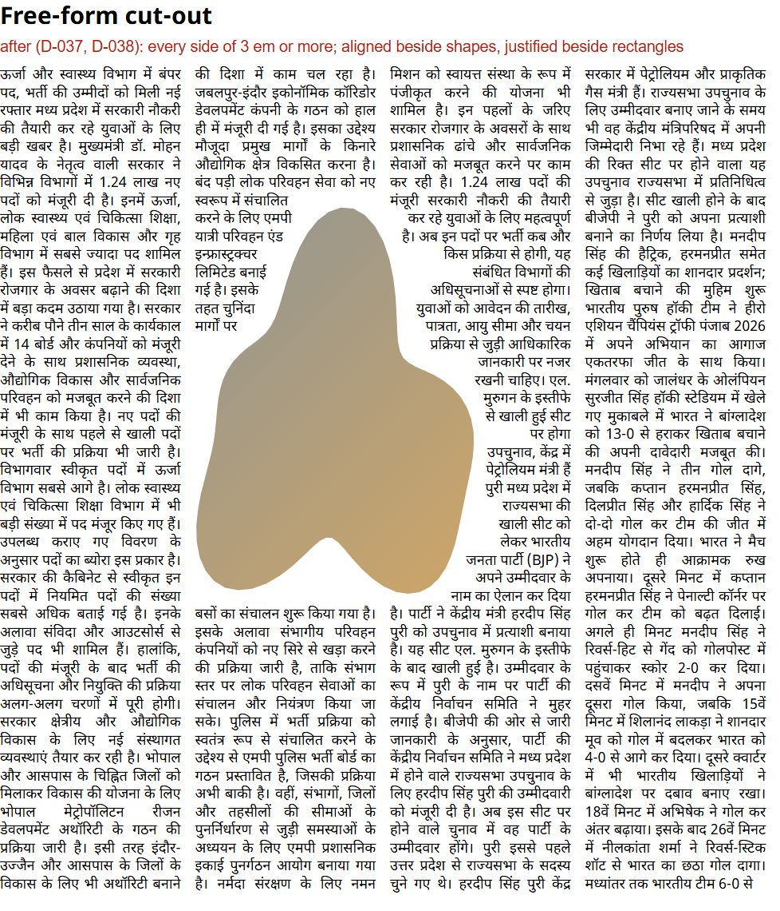

The page is 4 columns, 640 × 760 px at 12 px, not the A3 grid. flow() takes rectangles, so each shape is sliced into one rectangle per line of text: its widest point inside that line, plus an 8 px margin.
Each row shows one shape twice. Left, before: the Phase 0 engine (commit e797b6d). Text takes only the wider side of a split line, gaps under 6 em stay empty, and every line is justified. Right, after: today's packages/engine/src/flow.js (D-037).
align: 'left'); with the shape on its left, flush right (align: 'right'). Lines beside plain rectangles stay justified.Still open: each line clears the shape's widest point inside it, so the top and bottom of the round photo leave small wedges. A finer outline is later work.










Rebuild: node scripts/flow-shapes.mjs.